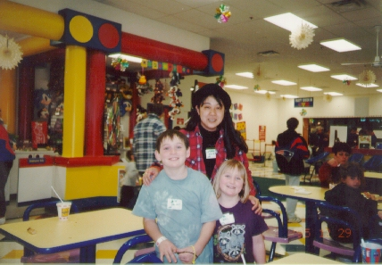

ベビーシッター (95.12)
Danny & Emily

|
ここに来て1年がたち、少しずつ慣れてきた頃、少し働いてみたくなりました。ただ、私は学生時代に学生がやるようなアルバイトは、マクドナルド、パン屋さん、ウェイトレス、家庭教師、コンパニオンなどをしてきて、日本では事務として６年間働き、アルバイトのたいへんさはわかっていました。風邪をひけばお金はでないし、ちょっとやる気がないと全然たまらない。だから、どうせやるなら自分の興味のあることをやってみたいと思ってベビーシッターを選んだわけです。学生や先生と話す機会はありますが、子供と接することが普通にしているとなかなかとれないからです。 こっちでベビーシッターと言うと、子供の面倒を見る人、という意味になるようです。普通は高校生のバイトで、給料もウェイトレスよりも低い場合が多く、大学生からは人気がありません。が、親たちは大人がやることを好んでくれるようです。最初、「ベビーシッターやります」という張り紙をあちこちに貼ったのですが、私の年齢を聞くと安心してくれました。ただ、私の方では、本当の赤ちゃんには興味がなく、最低でも４歳以上がよかったので、いくつか断ってしまいました。同時に周りのアメリカ人の友人にもベビーシッターをやりたいことを話しておき、このダニー（９歳）とエミリー（７歳）に出会ったのです。 彼らの両親、バリーとミッキーは、開業医と看護婦です。毎日忙しいので二人でゆっくり話す時間がとりたい、と私を雇ってくれました。毎週、彼らと遊んですぐ仲良くなりました。しばらくしてミッキーが「私が来るようになってダニーの早口が直った」と喜んでくれました。ここの子供たちは（日本もかな？）早口で話す傾向があるようなのですが、私は早口だと何を言ってるのかわからないので、必然的にダニーはゆっくり話さなくてはならないのです。また、私はエミリーによく発音の仕方を教えてもらっていたのですが、エミリーは一番年下なのでいつも教えてもらう側で、私に教えることができるのを喜んでいるそうです。 前回のミニアルバムでだしたディビッド（７歳）とジャスティン（５歳）とは大違いで、こちらは親から"Don't be wild!"と言われるほど、野生的です。とにかく身体を動かして遊ぶ事が好きで、ディビッドのような質問は全然してきません。ダニーとは野球、バスケ、エミリーとは探検、かけっこ、冬には橇のようなもので、外へ飛び出します。ダニーは、バスケを使った "Keiko" という遊びを作ってくれました(^-^;。部屋の中の彼らのお気に入りは"Cat and Mice"。私が猫になって部屋中、彼らを追いかけます。初めて会った頃は、二人が飛び掛かってきても私が勝ったのに、今では一人に対しても自信がないほど彼らはみるみる間に大きくなって、私はもうエミリーをおんぶすることもできません(^^;。 この写真は、家から３０分くらいのところにある、Discovery World というところへ連れていった時のものです。ここは、マクドナルドのプレイルームを何十倍にもしたようなところで、子供たちは思いっきり遊びます。誕生日会があったり、くじがあったり、食べるところもあり、子供たちのお気に入りの場所です。この日、食事をしながら彼らにカタカナの名前の書き方を教えたら、ふたりとも一生懸命練習していました。エミリーは、自分の日本語での「最初の文字は"I（アルファベットのアイ）"だ」と言っていました。（エは I に見えるから(^-^)。） |

=Danny, Emily と Discovery World (Poughkeepsie) にて(95.12)=
[ホームへ] [写真一覧へ]